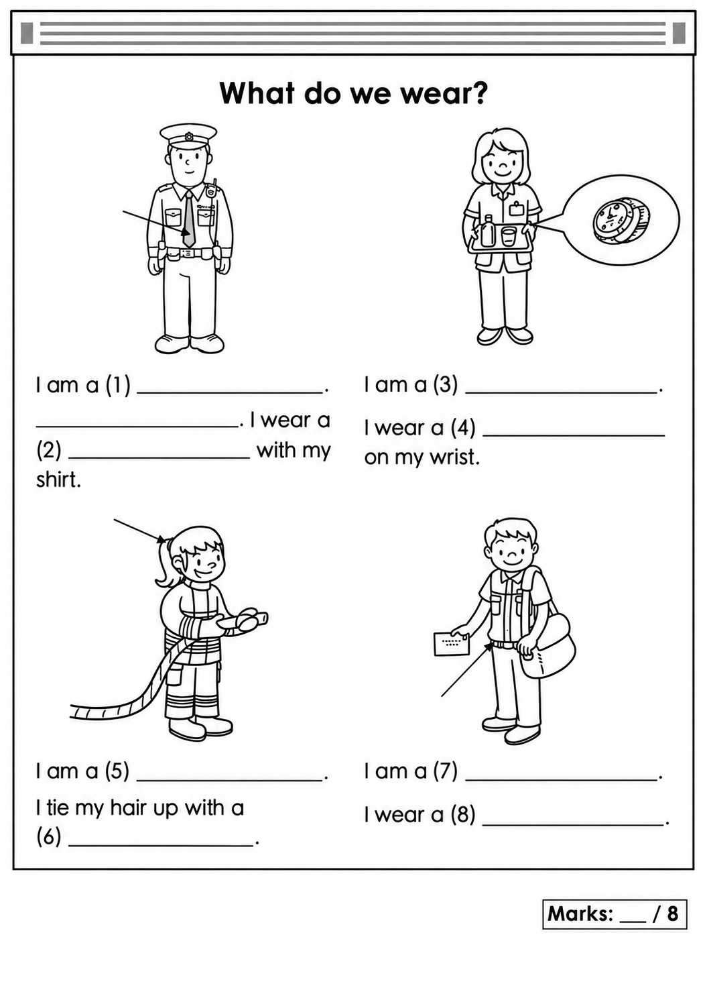
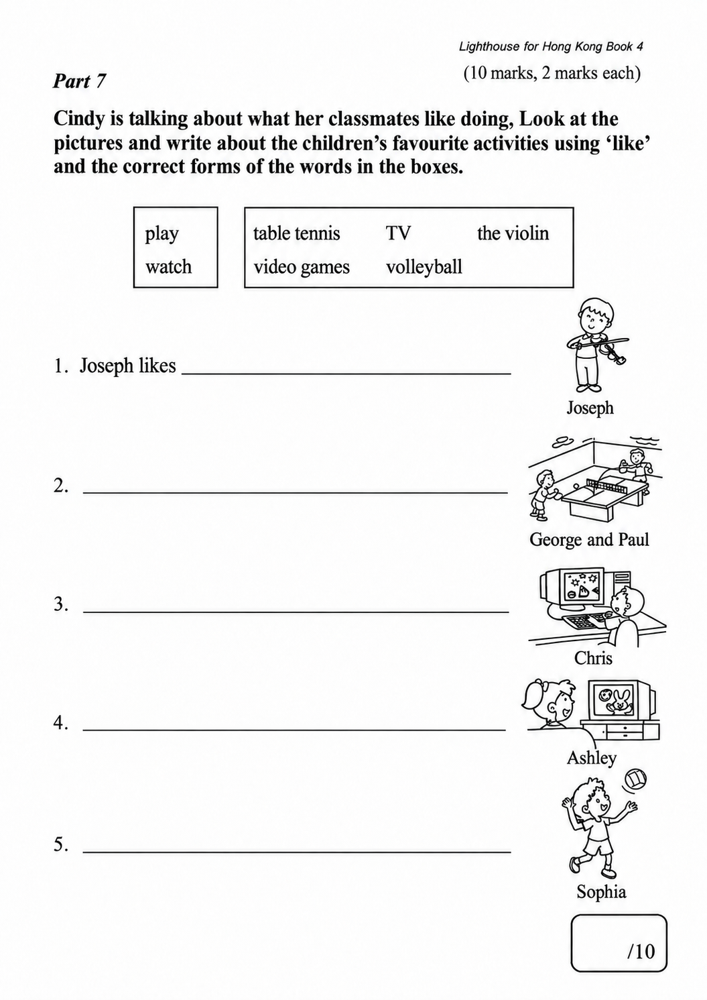

已掌握
| # | 中文意思 | 例句/提示 | 英文默写 | 已掌握 |
|---|---|---|---|---|
| noun 名词 | ||||
| 1 | 主人 | The dog loves its . | ||
| 2 | 页码 | Please open your book to this . | ||
| 3 | 邮票 | I put a on the postcard. | ||
| 4 | 小船 | The is on the water. | ||
| 5 | 护士 | The helps patients. | ||
| 6 | 家务 | I help my parents with the . | ||
| 7 | 活动 | This is fun. | ||
| 8 | 顺序 | Please put them in . | ||
| 9 | 晚饭 | We eat at home. | ||
| 10 | 医生 | The checked my temperature. | ||
| verb 动词 | ||||
| 11 | 触摸 | Do not the hot cup. | ||
| 12 | 喂养 | I my fish every day. | ||
| preposition 介词 | ||||
| 13 | 在......对面 | The library is the school. | ||
| phrase 短语 | ||||
| 14 | 左转 | at the corner. | ||
| 15 | 等一下 | , please. | ||
| adjective 形容词 | ||||
| 16 | 正确 | This answer is . | ||
| adjective/interjection 形容词/感叹词 | ||||
| 17 | 欢迎 | to our school. | ||
| uncategorized 未分类 | ||||
| 18 | 楼层 | Our classroom is on the second . | ||
| 19 | 赢得 | Our team hopes to the match. | ||
| 20 | 日记 | I write in my every evening. | ||
| # | 单词/词组 | 中文意思 | 例句/说明 | 已掌握 |
|---|---|---|---|---|
| adjective 形容词 | ||||
| 1 | correct | This answer is correct. | ||
| 2 | careful | Be careful with the knife. | ||
| noun 名词 | ||||
| 3 | content | This book has interesting content. | ||
| 4 | seed | The bird pecks a seed. | ||
| 5 | mushroom | A mushroom is a kind of food. | ||
| 6 | crocodile | The crocodile is in the river. | ||
| 7 | interviewer | The interviewer asks questions. | ||
| 8 | balloon | The red balloon is floating in the air. | ||
| 9 | clown | The clown made us laugh. | ||
| 10 | volunteer | A volunteer helps us plant trees. | ||
| 11 | roundabout | The roundabout is in the playground. | ||
| 12 | knowledge | Books give us knowledge. | ||
| 13 | farm | Ben wants to go to the farm. | ||
| 14 | cafe | We had drinks at a cafe. | ||
| noun phrase 名词短语 | ||||
| 15 | department store | We shop at the department store. | ||
| 16 | the school fair | There are many games at the school fair. | ||
| verb 动词 | ||||
| 17 | describe | I can describe the picture. | ||
| verb phrase 动词短语 | ||||
| 18 | play the piano | I want to play the piano every day. | ||
| 19 | make models | I can make models but I can't make paper toys. | ||
| 20 | have a barbecue | I want to have a barbecue. | ||
| 21 | have a picnic | I want to go there because I want to have a picnic. | ||
| 22 | feed animals | We can feed animals on the farm. | ||
| 23 | chatting with friends | He likes chatting with friends. | ||
| 24 | making models | Hiro likes making models of robots. | ||
| 25 | have a buffet meal | We have a buffet meal at the hotel. | ||
| noun/verb 名词/动词 | ||||
| 26 | exercise | Exercise is good for your health. | ||
| uncategorized 未分类 | ||||
| 27 | following | Please answer the following questions. | ||
| 28 | problem | Can you help me with this maths problem? | ||
| 29 | concert | We went to a concert last night. | ||
| 30 | corresponding | Write each answer in the corresponding box. | ||
| # | 中文意思 | 例句/提示 | 英文默写 | 已掌握 |
|---|---|---|---|---|
| time/date 时间日期 | ||||
| 1 | 九月 | is the ninth month. | ||
| 2 | 星期三 | is a weekday. | ||
| time unit 时间单位 | ||||
| 3 | 时 | An has 60 minutes. | ||
| 4 | 分 | A has 60 seconds. | ||
| directions 方向 | ||||
| 5 | 北 | is a direction. | ||
| numbers 数字 | ||||
| 6 | 17 | is 17. | ||
| 7 | 30 | is 30. | ||
| 8 | 70 | is 70. | ||
| ordinal numbers 序数 | ||||
| 9 | 第二 | This is the shape. | ||
| solid shape 立体图形 | ||||
| 10 | 六棱柱 | A has hexagonal faces. | ||
| 11 | 四棱锥 | A has one quadrilateral base and four triangular side faces. | ||
| 12 | 面 | A cube has six . | ||
| plane shape 平面图形 | ||||
| 13 | 三角形 | A has three sides. | ||
| 14 | 四边形 | A has four sides. | ||
| 15 | 长方形 | A has four right angles. | ||
| # | 单词/词组 | 中文意思 | 例句/说明 | 已掌握 |
|---|---|---|---|---|
| operations 运算 | ||||
| 1 | carrying | Carrying helps when the ones make ten. | ||
| geometry 几何 | ||||
| 2 | perpendicular line | Perpendicular lines meet at a right angle. | ||
| 3 | parallel | Parallel lines never meet. | ||
| 4 | line segment | Draw a line segment. | ||
| 5 | curve | Draw a curve. | ||
| 6 | dotted line | Draw a dotted line between the two points. | ||
| question word 题目词 | ||||
| 7 | estimate | Estimate the answer first. | ||
| 8 | backwards | Count backwards from 20. | ||
| 9 | match | Match the number to the word. | ||
| shape 形状 | ||||
| 10 | circle | Draw a circle around the answer. | ||
| answer 答案 | ||||
| 11 | correct | Choose the correct answer. | ||
| comparison 比较 | ||||
| 12 | least | Which number is the least? | ||
| 13 | shortest | Find the shortest line. | ||
| 14 | heaviest | The 3 kg bag is the heaviest of the 1 kg, 2 kg and 3 kg bags. | ||
| time/date 时间日期 | ||||
| 15 | midnight | Midnight is twelve o'clock at night. | ||
| quantity 数量 | ||||
| 16 | pair | A pair means two things together. | ||
| position 位置 | ||||
| 17 | above | The clock is above the board. | ||
| operations calculation 运算 | ||||
| 18 | multiplication | Multiplication can use times. | ||
| 19 | divide A by B | Divide A by B. | ||
| teacher math vocabulary 老师数学词汇 | ||||
| 20 | finish | Please finish the calculation. | ||
| currency money 货币 | ||||
| 21 | dollar | One dollar has 100 cents. | ||
| 22 | note | This is a five-dollar note. | ||
| measurement 测量 | ||||
| 23 | millimeter | One millimeter is one tenth of a centimeter. | ||
| 24 | gram | One gram is one thousandth of a kilogram. | ||
| position order 位置和顺序 | ||||
| 25 | following | Answer the following questions. | ||
| data charts 统计图 | ||||
| 26 | block chart | Read the block chart. | ||
| geometry tool 几何工具 | ||||
| 27 | set square | A set square helps us draw angles. | ||
| 句型结构 | ||||
| 28 | Angle ... is the largest. | Angle A is the largest. | ||
| 29 | ... is to the south of ... | The library is to the south of the shop. | ||
| plane shape 平面图形 | ||||
| 30 | leg | A leg of a trapezium is a non-parallel side. | ||

